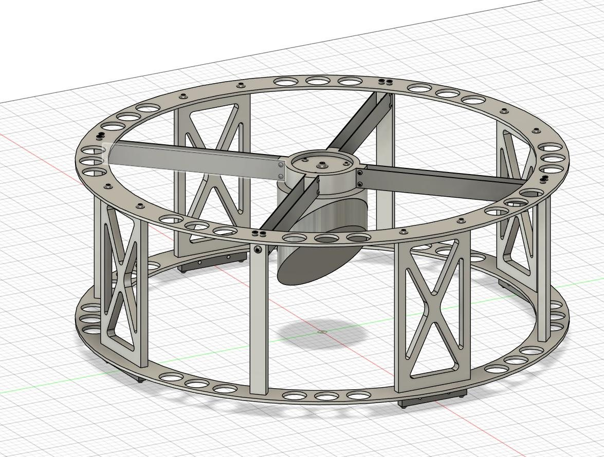
前段 · 次鏡與相機
次鏡座以一根中心螺絲固定、三根螺絲調整傾角。採用八條、四組的十字支架（一般小型牛反只有四條），減少不同姿態下的扭轉，讓星點不變形、星芒不分岔。
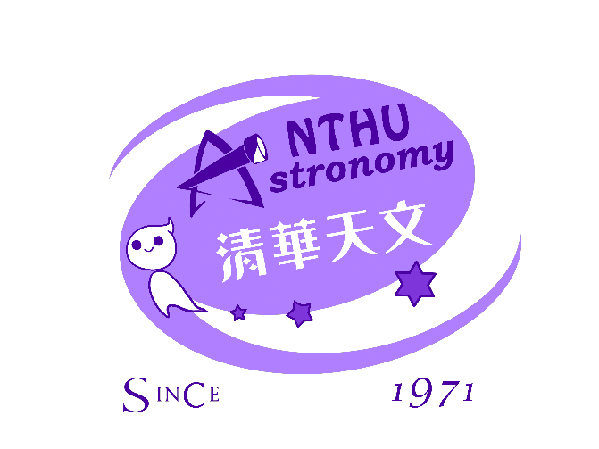
清大天文 · 17.5″清華大學天文社 × 清華大學天文台
1986 年，學長姊集資從美國買回一片 17.5 吋主鏡，夢想卻停在了半路。2022 年它重見天日——這一次，我們要親手把它做成望遠鏡。
01 · 鏡片的故事
第十至十二屆社員決議，要親手打造一支屬於清大天文社的大型望遠鏡。
社員集資向美國 Coulter 公司購得 17.5 吋主鏡。國際運送與海關延宕，前後至少四個月才抵達清華。
沈君山前校長主持，邀集多位教授討論場地、經費與教育意義。沈校長說：「在自製過程中可以學習、訓練技巧。」
資金、技術、人事更迭……計畫終究沒能完成，鏡片靜靜躺在物理系光學實驗室的角落。
實驗室搬遷時，兩位副社長巧遇物理系退休教授施宙聰。施教授想起這面閒置的大鏡片，將它交給天文社。原以為是遺失的 16 吋鏡，量了才知道：17.5 吋。
52 屆社員提出構想，54 屆幹部與天文台推動，邀請天文所張祥光教授、賴詩萍教授指導，正式啟動製作計畫。
「人們並不是不喜歡天文，而是缺乏接觸的渠道。」 — 2024 中秋路邊天文之後，我們寫下的一句話
02 · 望遠鏡設計
由成員鄭亦家以 Fusion 360 建模並做結構分析。三段式 6061 鋁合金鏡筒、碳纖維管連接，可拆解裝車，載到梅峰或暗空公園觀測。
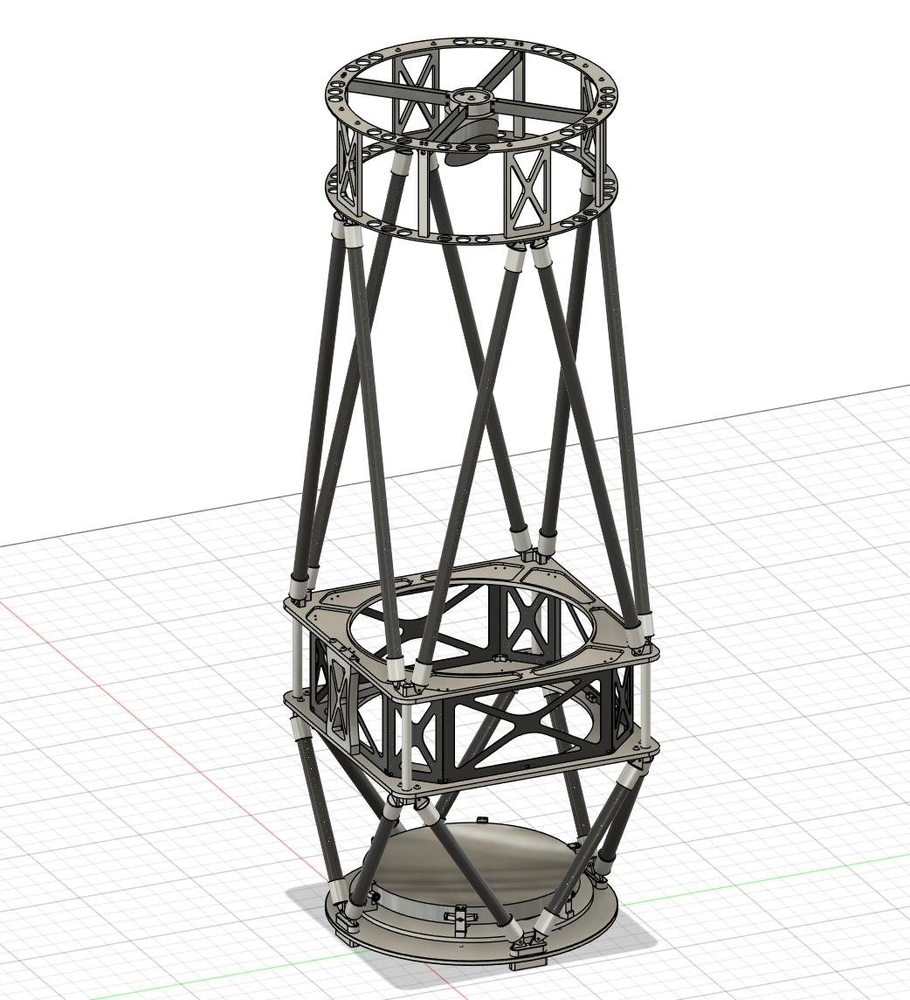
3D 模型 拖曳旋轉 · 滾輪／雙指縮放
次鏡座以一根中心螺絲固定、三根螺絲調整傾角。採用八條、四組的十字支架（一般小型牛反只有四條），減少不同姿態下的扭轉，讓星點不變形、星芒不分岔。
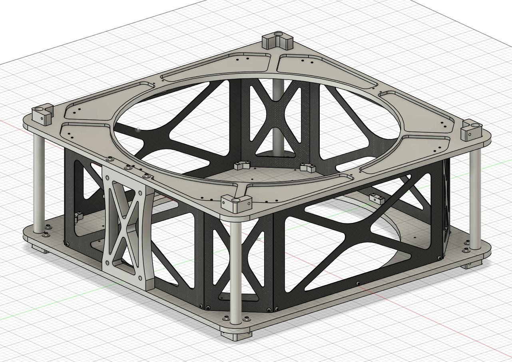
較厚的鋁板、四角鋁柱加上八片碳纖維側板，負責承受整支望遠鏡的重量，並預留鳩尾板鎖點。靠主鏡側設有四個 6 公分風扇孔，吹散鏡面上的空氣邊界層。
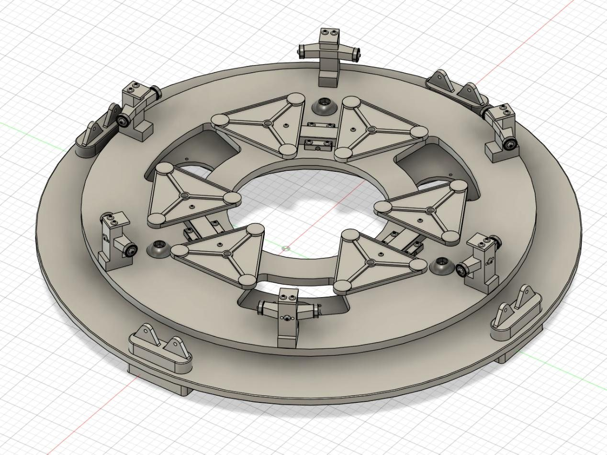
主鏡底部由三組「翹翹板」構成的 18 點浮動支撐承托，每組附配重塊平衡力矩；周圍 6 組 12 點軸承做徑向支撐，讓鏡片熱脹冷縮時能自由滑動。三組彈簧螺絲調光軸、六根粗螺絲鎖定。
03 · 科學觀測
校園有光害，所以我們把重點放在精確的科學測光。清大天文台自 2021 年底參與歐洲太空總署 ExoClock 公民科學計畫，已觀測超過 50 顆系外行星，數據被學術期刊引用。
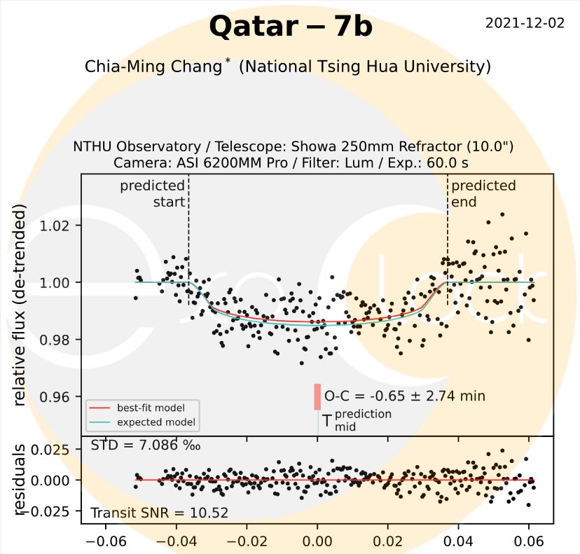
行星經過恆星前方時，恆星會變暗一點點。成員張家銘用 25 公分折射鏡拍下 Qatar-7b 的凌星；換成 44.5 公分口徑，能挑戰更暗、更難的目標。
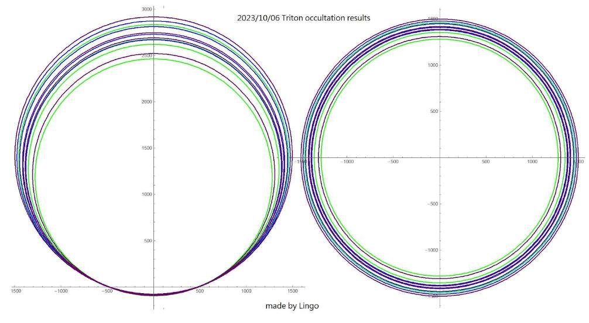
天體遮住背景恆星的瞬間，藏著它的大小與形狀。成員林孟辰以掩星光變曲線估算了海王星衛星 Triton 的直徑。
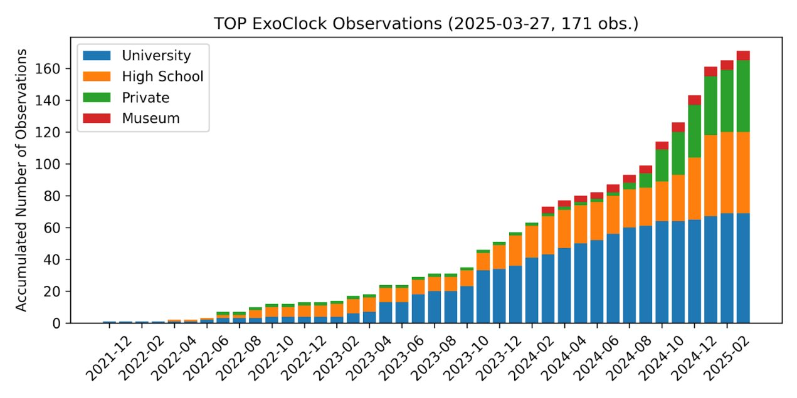
清大率先開展 ExoClock 觀測，並透過教師培訓營推廣到其他學校。全台已累積觀測超過 160 個目標。
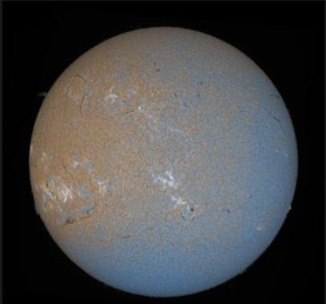
每學期 1–2 次移地到暗空地點，拍攝星雲、星團與河外星系；也作為物理系、天文所學生專題與論文的觀測工具。
04 · 科普推廣
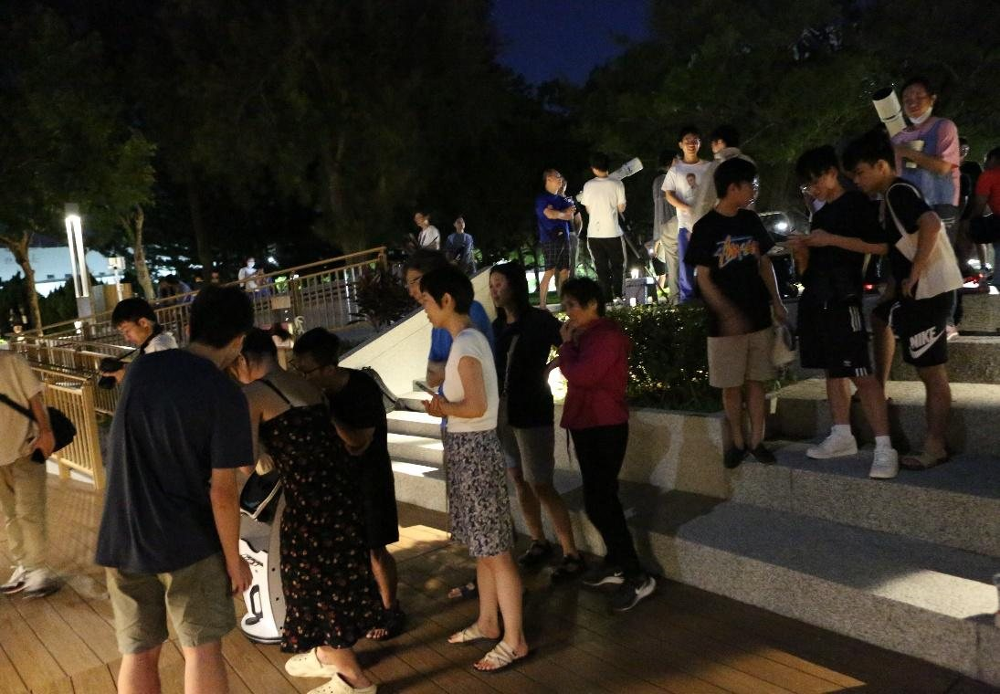
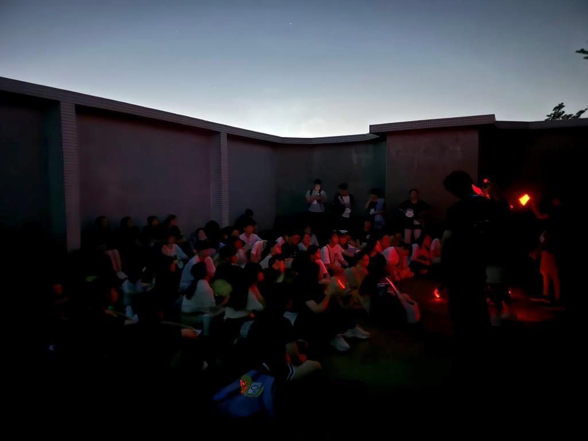
05 · 計畫時程與經費
1–2 個月
確定技術需求與合作2–3 個月
初步測試與微調6–8 個月
深空影像與系外行星數據2–3 個月
發表成果、科普活動、規劃未來06 · 製作進度
每一次設計、加工、組裝與觀測，都會記錄在製作日誌裡。
07 · 團隊
核心成員 · 曾任星空之子天文營總召
核心成員 · 鏡筒 3D 設計與結構分析
核心成員 · 掩星觀測
核心成員 · 系外行星凌星觀測
指導老師清華大學天文研究所 張祥光 教授、賴詩萍 教授
執行單位清華大學天文社、清華大學天文台
無論你是當年參與過的學長姊、對天文有興趣的同學，或是想支持學生自製科學儀器的朋友——歡迎追蹤我們，參加觀星活動，或與我們聯繫募款與合作。